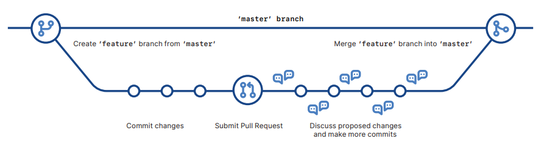

FSU Libraries Git Tutorial#
In This Tutorial You Will Learn:
What Git is typically used for
The difference between Git and GitHub
How to access Git and GitHub
Linking Git and GitHub
Basic vocabulary
The difference between cloning and forking
Git add, commit and push
Working with branches
Pull, fetch and merge
Git aliases and helpful Unix commands
The correct workflow
Git URL protocols
Audience and Prerequisites
This tutorial will help beginners learn the basics of Git and Github. We assume that you have some experience with the terminal/command prompt. We also assume that you are using Git to help manage coding projects. Also note that for this tutorial we will be using Git in the command line only.
What is Git and why should you use it?
Git is a free and open source distributed version control system, developed by Linus Torvals in 2005. There are several different types of distributed version control systems, but Git is great because it is free, open source, has a very low runtime, has implicit backup, and is very secure. Git has great support with branching, merging and pull requests, which allow teams to collaborate and efficiently work with each other’s code. While allowing developers to work simultaneously, it also prevents overwriting each other’s changes. Git is the most popular and widely used version-control system today.
It can be used for:
Tracking code changes
Tracking who made code changes
Coding collaboration
What is the difference between Git and GitHub?
Git is the tool that helps you keep track of changes to your project, and manages your projects history on your local machine
GitHub is a website that you can use to store and share your Git projects publicly and privately
GitHub is essentially a hosting service for Git repositories, that has a user-friendly interface
Many developers use both Git and GitHub at the same time, to maximize their productivity and collaboration efforts
Git_Tutorial2#
How Do You Access Git and GitHub?
To access Git, you may need to download it on your local machine, but first you should check and see if your machine already has it by using the following command on your terminal/command prompt:
Use the following command on your terminal/command prompt:
git --version
If the terminal returns your Git version, then you already have Git installed. If not, follow the next steps to download and configure Git:
Download Git from the official website:
https://git-scm.com/downloadsConfigure Git with your name and email address using the terminal/command prompt:
git config --global user.name "Your Name" git config --global user.email your.email@example.com
Verify that Git installed correctly using the following:
git --version
To verify your Git settings on your local repository, use the following command:
git config --listKeep in mind:
Git is available for different operating systems, so be sure to choose and follow the instructions for the appropriate version for your system
Also, the name and email that you choose to configure Git will be associated with your Git commits, so choose carefully
Now let’s move on to accessing GitHub:
Git_Tutorial3#
Lets go over some vocabulary
Working Directory: the place where you are currently editing your files
Staging Area: a place between your working directory and the repository, where you prepare and select the changes you want to include in the next commit
Repository (repo): a storage location where your Git project is located, a repository can exist both on your local machine (local repository) and on Github (remote repository)
Branch: a separate line of development that allows you to work on a section of code independently, without affecting the main code of your project
Merge: combining changes from one branch into another, which is used to bring together the work done on different branches
Conflict: a situation where Git cannot automatically merge changes and requires manual fixes
Clone: creating a local copy of a Git repository
Fork: creating a personal copy of the repository under your GitHub account
The difference between fork and clone:
Forking is typically used when you want to contribute to a project that is hosted on GitHub. When you fork a repository, you create a personal copy of the repository under your GitHub account, in which you can experiment and make changes without altering the original project. However, if you wish to propose changes, you can create a pull request to request that the original project owner incorporate your changes into the main repository.
Cloning is typically used when you want to copy another repository to your local machine, to work independently or contribute to it. When you clone a repository, you get an exact copy of the entire project (including branches and commit history). Cloning is a local operation, and any changes you make will not affect the original repository, unless you explicitly push your changes back
Git Basic Workflow
Initialize a Git repository
Modify a file from your working directory
Add the file(s) to the staging area
Commit the files, which moves them from the staging area
Create branches for different features/fixes
Combine changes using merge or pull requests
Link to GitHub and push/pull to store the changes permanently to the GitHub repository
Collaborate, review changes, and propose pull requests with GitHub and repeat the process
Git_Tutorial4#
Now We Can Set Up a Repository
A repository is typically used to organize a single project
They can contain folders, files, images, videos, spreadsheets, data sets, etc.
There are a few different options when setting up a repository
You can initialize a new repository, initialize a new repository for existing code, or clone an existing repository
To initialize a new repository do the following:
Open your terminal/command prompt
Navigate to the directory where you want to create the new repository, or make a new directory for it (keep in mind that the name of the directory/subdirectory will be the name of the repository)
Once you are in the directory that you would like to use, use the following command to start a new, empty Git repository in the current directory:
git init
Git will send a message verifying that it successfully initialized an empty repository
To initialize a new repository for existing code do the following:
Open your terminal/command prompt
Navigate to the directory with your existing project
Once you are in the directory that you would like to use, use the following command:
git init
Git will send a message verifying that it successfully initialized a repository
To clone an existing repository do the following:
First you will need to get the Git SSH URL of the repository you would like to clone
To do this, open the GitHub website and locate the repository that you would like to clone
Next, click the green code button, and in the local tab it should show a SSH tab with a SSH address
Copy this address, which should look like the following:
git@HOSTNAME:USERNAME/REPONAME.git
Now open your terminal/command prompt, and navigate to the directory where you would like to have the cloned repository
Once you are in the desired directory, use the following command with the SSH URL from earlier:
git clone git@HOSTNAME:USERNAME/REPONAME.git
Now the repository will be cloned and can be located in your desired directory
Keep in mind:
In addition to using SSH URLs for cloning, GitHub also provides HTTPS URLs for cloning, which may be preferred in some situations
What is the command to initialize Git?
Click to show solution
git init
Git_Tutorial5#
Understanding Git concepts
After making changes to files in your repository, follow these steps to add those new versions to your repository using terminal/command prompt
These commands need to be executed in the working directory of your Git repository (the folder on your local machine that has the files and directories of your project):
Git Add - This is used to take your modified files and mark them as ready to be saved and included in the next commit
git add <file(s)>
Git Commit- This is used to save the modified files permanently, and the -m flag is used to add a brief description of what you changed
git commit -m "commit message"
Git Push- This is used to upload the commit made from your local machine, to your repository
git push <repository name><branch name>
You can also use Git Status, to display the current state of the Git repository (this will give you information about the different states of your files)
git status

Git_Tutorial6#
What is the command to check the status of Git?
Click to show solution
git status
What is the command to add a file to the staging environment?
Click to show solution
git add
What is the command to commit changes to the current repository, with a message?
Click to show solution
git commit -m “Message”
Git_Tutorial7#
Why link Git and GitHub?
Since Git allows you to manage changes to your code, it provides a complete history of all modifications made, which makes it easy to revert to a previous version when needed. Git allows collaboration among team members, so that multiple developers can work on the same project at the same time. Git manages the changes made to a code from different team members and merges them. Git also has a “branching” feature which allows developers to create separate branches for new features, without affecting the main code. By linking your Git with your GitHub, you can easily make your repositories accessible to others. Having your Git repository linked to your GitHub allows GitHub to serve as a backup if your local machine fails (for example if you delete your entire project off of your local machine).
Linking a local repo with GitHub
Now that we have initialized a local repository and added files to this repository, we can link the local repository to your GitHub account. Essentially we will be making a new empty repository on GitHub, and then pushing your local repository into this GitHub repository. If you only want to keep track of your code locally, then you do not need to use GitHub. However if you plan to work collaboratively, then you should use GitHub. To link your local repository with your GitHub account, do the following steps:
Naviate to the directory of your local Git repository
Go to the GitHub website and log into your account
Click on the “+” sign in the top right corder, and select “new repository”
Give the repository a name and description, and then click the “create repository” button
On the GitHub repository page, you will see the URL of your new repository (yourUsername/yourRepo.git)
Go back to your terminal or command prompt, navigate to the directory with the local repository, and use the following commands:
git remote add origin https://github.com/yourusername/your-repo.git git push -u origin main
Git_Tutorial8#
Working with branches
As mentioned previously, branching is used to edit the code directly but without impacting the main branch or any other branches
In other words, branching lets you have multiple different versions of a repository at one time
Also, any changes made will not be automatically implemented into your repository
By default your repository has one branch named main, but you can create additional branches!
To create a new branch type the following in terminal/command prompt:
git branch branchName
To see the available branches that you have, type the following:
git branch
To switch to a different branch, type the following:
git checkout desiredBranch
Lets say for example, you just updated one of the files in the directory of your repository
You can use the following command to see what files have been changed on that branch, and the “progress” of each file:
git status
Once you check the status, then you can go on to adding, committing, and pushing the files
Keep in mind:
Before switching branches, it is good practice to ensure that any uncommitted changes in the current branch are committed to avoid conflicts
It is also good practice to create descriptive and meaningful branch names that indicate the purpose/feature being worked on
When you create a new branch, you are essentially making a copy of the main branch as it was at that point in time
If someone made changes to the main branch while you were working on a different branch, you could pull in those updates
Forking a Repository
Forking is mainly used to propose changes to someone else’s project, or to use someone else’s project as a starting point for your project
To fork a repository, use the following steps:
Log into your GitHub account, and navigate to the repository that you would like to form
In the top right corner of the page, click the fork button
Select the dropdown button and click an owner for the forked repository
You can also change the name of the forked repository if you would like
Select what branch you would like to copy (typically you only need to copy the default branch)
Click the create fork button
Now you have the forked repository
However, you do not have the repository contents saved locally on your device, so you have to clone it
To clone a forked repository, use the following steps
Log into GitHub, and navigate to your forked repository
Click on the green code button and copy the SSH URL
Now open your terminal or command prompt, and navigate to the directory where you want the forked repository
Use the following Git command:
git clone git@HOSTNAME:USERNAME/REPONAME.git
Now your local copy of the forked repository has been created!
Git_Tutorial9#
What is the command to switch to a different branch?
Click to show solution
git checkout desiredBranch
Git_Tutorial10#
Git Pull, Fetch, and Merge
When doing group work/collaboration on a code project, it is important to always have the most recent changes on your local machine
You can do this using a few Git commands
Fetch is used to get the history of the changes
git fetch origin
Now check the status so that we can see the how behind our code is from the updated code
git status
Now we can check the exact differences between our code and the updated code in a few different ways:
git log origin git diff origin
Now we can use merge to combine our current branch, with a specified branch (the branch with the updated code)
git merge origin/<branchName>
Finally we can double check that we are up to date using status
git status
There is also a shortcut to doing those commands above, which is to use the pull command, which is the combination of fetch and merge
This shortcut came out after fetch and merge were created
You can almost always use the pull command, unless you wanted to merge one change at a time
git pull origin
Keep in mind:
Users should replace “origin” with the appropriate remote name if they have multiple remote repositories
When using git pull, if there are any conflicts between your changes and changes from the remote repository, this command will attempt to auto-merge but may require manual resolution
You may face an issue known as a merge conflict, which means that Git was unable to successfully merge the branches, which can be due to a variety of different issues
I would recommend looking at the GitHub website for solutions to this issue, since there is no one universal solution
Pull requests
Pull requests are used to propose your changes to be reviewed, and be merged into the main branch
You would typically use a pull request in a collaborative workflow, especially when you are working with a repository that you do not have direct access to
Pull requests allow maintainers of the repository to review changes and see differences between branches before merging branches into the main branch
To create a pull request perform the following steps in GitHub:
Log into your GitHub account, and open your repository
Click the pull requests tab of your repository, and then click new pull request
In the example comparisons box, select the branch you made, to compare with the main branch
Look over the differences between branches, and make sure that you are ready to submit the request
Click create pull request, and give the request a title and description if you would like to
Now your collaborators can review your edits and make suggestions
When ready, you can merge your pull request by doing the following:
At the bottom of the pull request, click merge pull request
Click the confirm merge button
Now your branch has been merged, and you can safely delete it if you would like!

Git_Tutorial11#
Using the correct professional workflow
Create a new branch
Branching is a very important concept in Git, and it is crucial to understand that the origin/master branch is always the main branch
Anytime that you would like to add something new, you should create a new branch
Also, make sure to use descriptive branch names so that it is easy for others that you are working with to understand what you were working on
Add commits
After your branch was created, then you can get to work editing, adding and deleting files
Once you reach a milestone, you should add the changes to your branch using commit
It is important to use commit because it can help keep track of your work
It is also good practice to make a commit message every time you commit something, with what you changed and why
Another reason why you should use commit frequently is because it keeps track of the history of commits, so that you can revert back to a previous version if needed
Creating a pull request
A pull request is used to notify collaborators that you made changes to your branch and you are ready for them to consider and/or review the changes
If they like the changes then they can merge them into their branch
Review
Once a pull request has been made, it can be reviewed by whoever has access to the branch
Pull requests are designed for collaboration
Deploy
Once everything has been reviewed, and any changes have been made, then it is time for final testing
GitHub allows you to deploy from a branch for final testing, before it has been merged with the master/origin branch
Merging
Now it is finally time to merge the code with the master/origin branch!
Git_Tutorial12#
Git URL Protocols
There are 3 different GIT URL protocols that are available for remote repository connectivity. Here is some information about them:
HTTPS:
HTTPS is a protocol that allows secure communication across the internet
Using HTTPS URLs for remote repositories is fairly easy to set up, since it only requires your GitHub username and password
HTTPS URLs are typically recommended for beginners, since they do not require any additional configuration
example: username/repository.git
SSH:
SSH is a network protocol that provides a secure way to access and communicate with remote servers
Using SSH URLs for remote repositories requires additional setup, which is generating and adding a SSH key to your GitHub account
However, once this key is set up, using SSH URLs has the advantage of secure communication, without needing to enter your username and password repeatedly
example: git@github.com:username/repository.git
GIT:
GIT protocol is a protocol that is unique to Git
This protocol does not provide any encryption or authentication mechanisms on its own, so it is typically only used in trusted and local networks
The other URL protocols are typically more popular
example: git://hostname/path/to/repository.git
Git_Tutorial13#
Helpful Git Commands
git log - displays the entire history of commits, and also displays the commit hash
git diff - will show the changes between your working directory and the repository’s staging area
git revert - uses the commit hash to revert to a previous version
git reset - removes a file from the staging area, but will not affect the working directory
Helpful Unix Commands
If you are new to Unix and need to use Git, here are some basic Unix commands that can be helpful when managing Git repositories:
cd is used to change directories, which can be used to navigate to the directory where your Git repository is located
cd <directory>
ls is used to list the files and directories in the current directory
ls
mkdir is used to make a new directory
mkdir <directory>
rm is used to remove files or directories
rm <file/directory>
mv is used to move or rename files or directories
mv <source> <destination>
man is used to access the manual pages for Unix commands, which is used for if you need help with a command
man <command>
Git Alias
Git aliases are custom shortcuts/abbreviations that you can create to simplify and speed up your Git workflow. Defining aliases for commonly used commands can be extremely helpful.
To create a Git alias, use the following command:
git config --global <alias>.<alias_name> <git_command>
An example of a commonly used alias is the following:
git config --global alias.st status
Git_Tutorial14#
What is the command to show changes between the working directory and staging area? (The unstaged changes)
Click to show solution
git diff
Git_Tutorial15#
Conclusion:
This Git tutorial has provided an overview of the version control system Git, and its fundamental concepts. By using Git and GitHubs functionalities, developers can improve collaboration, and effectively manage their projects!
The GitHub site also has a lot of great resources to learn from, and to practice with : https://docs.github.com/en
On that site you can also find a Git cheat sheet which is very helpful!